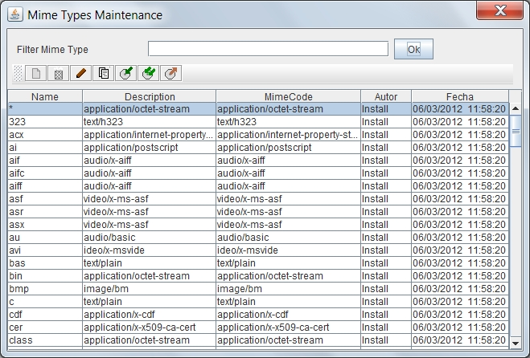

Scheduled Tasks List
By selecting the option to manage Scheduled Tasks, will appear the form "list of Scheduled Tasks". This form allows you to maintain and define the Scheduled Tasks.
Tareas programadas
OPD incluye la posibilidad de definir tareas programadas para realizar diversas operaciones de mantenimiento e integración.
No existe límite al número de tareas que puede definirse, aunque debe tenerse en cuenta el tiempo de ejecución de cada una de ellas, ya que si se definen demasiadas tareas demasiado complejas, podría ocurrir que no hubieran acabado algunas cuando debe empezarse de nuevo con ellas. Si es necesario puede configurarse el sistema para que distintos grupos de tareas se ejecuten en distintos ordenadores, permitiendo paralelizar el trabajo y escalar el sistema. Para ello las tareas tiene un atributo categoría, que permite agruparlas, de forma que en cada equipo puede ejecutarse todas las tareas programadas de una categoría concreta. Puede indicarse que un equipo ejecute todas las tareas de todas las categorías.
Puede definirse diversas tareas del mismo tipo pero con parámetros diferentes (por ejemplo puede programarse la exportación de una estructura de carpetas/expedientes con una frecuencia y la exportación de otra estructura con otra frecuencia y otro destino).
Para cada tarea definida, además de los parámetros propios de la tarea, se indica la frecuencia de ejecución y la fecha-hora de la próxima ejecución. De esta forma puede programarse la ejecución, por ejemplo cada 7 días, empezando a partir del sábado a las 23:00, o cada hora, empezando a las 9:00.
La ejecución de tareas implica 2 pasos. Cuando llega el día y hora de ejecución de una tarea, se genera una “orden de trabajo” de ejecución de esa tarea (una “fotocopia” de la tarea) por parte del ordenador encargado de generar esa categoría de tareas (o de todas). Esa orden de trabajo a su vez se encola y se llevará a cabo cuando el ordenador(es) encargado(s) de ejecutar finalicen las tareas anteriores. Por tanto la orden se crea en el momento exacto y con los parámetros adecuados, aunque pueda ejecutarse con un ligero retraso. Incluso en caso de algún tipo de incidente, podría no llegar a ejecutarse en su momento. Pero la “orden de trabajo” aparece y queda constancia de estar pendiente. Cuando el componente encargado de ejecutar las tareas se reactive, ejecutará todas las pendientes. Similarmente ocurre con las “órdenes de trabajo”, se generarán todas las que debían haberse generado incluso si no está encendido el ordenador encargado. Por ejemplo, si el ordenador encargado de generar tareas estuviera apagado durante 2 horas, al encenderse generará todas las tareas que debían haberse generado en ese tiempo, no solo las “nuevas”.
Escalabilidad
El sistema descrito es totalmente escalable. En el caso más simple, un solo ordenador puede encargarse de generar y ejecutar las tareas; en un caso complejo, 1 o 2 ordenadores podrían encargarse de generar las órdenes a partir de las tareas y varios de ejecutarlas, cada uno con una categoría asignada, para facilitar el reparto del trabajo.
Activación
Las tareas puedan activarse y desactivarse, de forma que pueden estar totalmente definidas y probadas pero no se ejecutan hasta que sea necesario, volviendo a desactivarse cuando se requiera. La activación controla la generación de las “órdenes de trabajo”, es decir si una tarea está desactivada,
At the time of storing the document should be set its MIME type, so that browsers and other programs can handle and open the file correctly. Documentation and lists of mime types can be found at: Wikipedia or IANA MIME Media Types
To filter the Mime Type or list of Mime Types you want to review, just enter part of the name in the text box and press "ok". The list of Mime Types that meet the conditions will be shown on the results table. Pressing the button without entering any value you see all the elements on which the user has permission. The results table shows the data:
- Identification name
- Description of the Mime Type
- Usual extension of the files
- Name of last user who modified the Mime Type
- Date and time of last modification

This results table can be sorted by selecting the header of each column. You can also change the size of each column by dragging the separator line in the headers.
Above the table of results there are several buttons for performing operations on the selected item. The available operations are:
-
 Add a new element
Add a new element
-
 Delete the selected element (if it is not used in some document or folder)
Delete the selected element (if it is not used in some document or folder)
-
 Modify the selected element
Modify the selected element
-
 Create a new item as a copy of the selected item
Create a new item as a copy of the selected item
-
 Export the selected item
Export the selected item
-
 Export all items listed
Export all items listed
-
 Import from file one or more previously saved items
Import from file one or more previously saved items
-
 Export all items listed in CSV format so it can be imported in Databases or Spreadsheet
Export all items listed in CSV format so it can be imported in Databases or Spreadsheet
It should be noted on export and import, that some elements may have dependency on others, so you must export all related and imported at the time of it in the proper order.
In the event of an error (lack of user permissions, data inconsistency, etc.), the operation is canceled and will present the reason for the error to the user.
View: Mime Types Maintenance and Object Definitions List
Help Index OpenProdoc